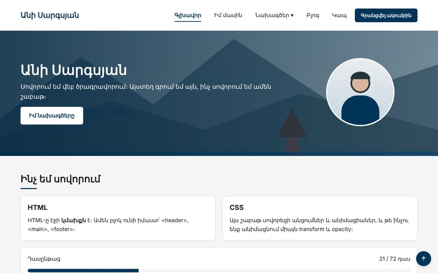
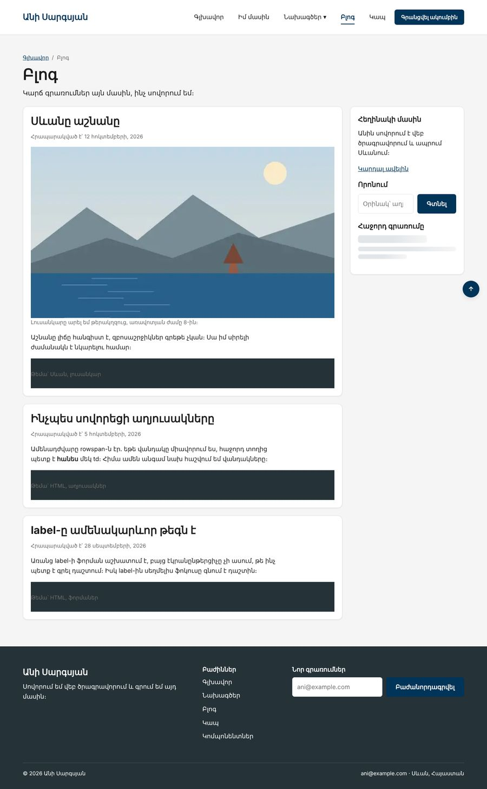

Տնային աշխատանք · HTML Դաս 21 · մինի-նախագիծ
Կայքը ստանում է սահուն անցումներ, հերթով հայտնվող hero, ընդգծում կենտրոնից, բեռնման կմախք և prefers-reduced-motion։ Սա վերջին տնայինն է Դաս 22-ի նախագծից առաջ։
Օգտագործիր միայն Դաս 01–21-ը։ Անիմացիաները գործարկվում են էջի բեռնման և hover-ի ժամանակ․ ոլորումով կամ կտտոցով գործարկվողները JavaScript են։
Կայքը «կենդանանում» է․ կոճակները և քարտերը սահուն են փոխվում, hero-ի տարրերը հայտնվում են հերթով, իսկ բլոգում կա բեռնման կմախք։ Ամեն շարժում անջատվում է, եթե օգտագործողը համակարգում խնդրել է նվազեցնել շարժումը։


Սկսիր Դաս 20-ի քո կայքից։ Եթե այն չունես, վերցրու Դաս 20-ի օրինակը։
@media (prefers-reduced-motion: reduce) {
*, *::before, *::after {
animation-duration: .01ms !important;
animation-iteration-count: 1 !important;
transition-duration: .01ms !important;
scroll-behavior: auto !important;
}
}Սա միակ տեղն է, որտեղ !important-ը արդարացված է․ օգտագործողի ընտրությունը ավելի կարևոր է, քան ցանկացած մեր կանոն։
.card {
transition: box-shadow var(--transition), transform var(--transition);
}
.card:hover {
box-shadow: var(--shadow-md);
transform: translateY(-4px); /* ոչ margin-top — Դաս 21, «էժան» անիմացիա */
}Տեղափոխիր transition-ը .card:hover-ի մեջ։ Քարտը սահուն կբարձրանա, բայց կթռչի վար առանց անցման։ Վերադարձրու։
Կոճակների transition-ին ավելացրու transform, որ :active-ի 1px-ը նույնպես սահուն լինի։
.menu a:not(.btn) { position: relative; }
.menu a:not(.btn)::after {
content: "";
position: absolute;
left: 14px;
right: 14px;
bottom: 6px;
height: 2px;
background: var(--accent);
transform: scaleX(0);
transform-origin: center; /* փորձիր left և right */
transition: transform var(--transition);
}
.menu a:not(.btn):hover::after,
.menu a[aria-current="page"]::after { transform: scaleX(1); }@keyframes fade-up {
from { opacity: 0; transform: translateY(16px); }
to { opacity: 1; transform: translateY(0); }
}
.fade-up { animation: fade-up .5s ease-out both; }
.delay-1 { animation-delay: .1s; }
.delay-2 { animation-delay: .2s; }Hero-ի h1-ին՝ fade-up, .lead-ին՝ fade-up delay-1, կոճակներին՝ fade-up delay-2։ Ջնջիր both-ը և նայիր, թե ինչ է կատարվում հետաձգման ընթացքում․ տարրը երևում է, անհետանում և նոր հայտնվում։
Ավելացրու նաև «Նոր» պիտակին pulse՝ 3 անգամ, ոչ անվերջ, և մոդալին՝ pop։
@keyframes shimmer {
to { background-position: -200% 0; }
}
.skeleton {
background: linear-gradient(90deg, var(--border) 25%, var(--bg) 50%, var(--border) 75%);
background-size: 200% 100%;
animation: shimmer 1.4s linear infinite;
}Կմախքը դեկորատիվ է․ ամբողջ բլոկին՝ aria-hidden="true"։ JS բլոկում այն կերևա, մինչ գրառումները բեռնվում են սերվերից։
DevTools → Rendering → Emulate CSS prefers-reduced-motion: reduce։ Անցիր ամբողջ կայքով և գրիր, թե ինչ կոտրվեց (օրինակ՝ տարր, որը մնաց opacity: 0), և ինչպես ուղղեցիր։ Performance ներդիրով համեմատիր margin-top-ով և transform-ով hover-ը։
transition-ը բազային կանոնում էtransform և opacity (և գույները)--transition տոկենիցaria-hiddenprefers-reduced-motion-ը global.css-ում է| Սխալ | Ինչպես ուղղել |
|---|---|
| Տարրը մնում է անտեսանելի | from {{ opacity: 0 }} և չկա animation-fill-mode: both, կամ անիմացիան չի սկսվում |
| Hover-ի ժամանակ մոտակա տարրերը շարժվում են | Անիմացնում ես margin կամ width։ Օգտագործիր transform |
Երկրորդ transform-ը ջնջեց առաջինը | transform-ը մեկ հատկություն է։ Գրիր երկուսը միասին՝ translateY(-4px) scale(1.02) |
Սրանք Դաս 21-ի տնային աշխատանքի կետերն են։ «մինի-նախագծում» նշվածները արդեն կատարել ես վերևի քայլերում, մնացածը կատարիր առանձին ֆայլերում կամ նույն թղթապանակում։
transition-ը բազայում, մյուսում՝ :hover-ում։ Նկարագրիր տարբերությունը։ մինի-նախագծումmargin-top: -4px-ը և transform: translateY(-4px)-ը։ Չափիր FPS-ը DevTools-ով։ մինի-նախագծումtransform-ը ջնջում է առաջինը։ Ուղղիր։rotate + translateX երկու կարգով։transform-origin)։ մինի-նախագծումfade-up անիմացիա 5 քարտի համար՝ animation-delay-ի հերթականությամբ։ մինի-նախագծումanimation-fill-mode: both-ը և նկարագրիր, ինչ եղավ delay-ի ընթացքում։ մինի-նախագծումbox-shadow-ը և drop-shadow-ը ոչ ուղղանկյուն SVG-ի վրա։prefers-reduced-motion, միացրու այն DevTools-ում և անցիր ամբողջ նախագծով։ Գրիր ցուցակ՝ ի՞նչ կոտրվեց և ինչպես ուղղեցիր։ մինի-նախագծումԵրբ բաժին 03-ի բոլոր կետերը նշված են, բացիր օրինակը և քո էջը կողք կողքի։ Բացիր երկուսի կոդն էլ խմբագրիչում։ Գտիր մեկ բան, որ դու արել ես այլ կերպ, և մտածիր՝ որն է ավելի հասկանալի և ինչու։ Քո լուծումը կարող է տարբերվել և լինել ճիշտ։